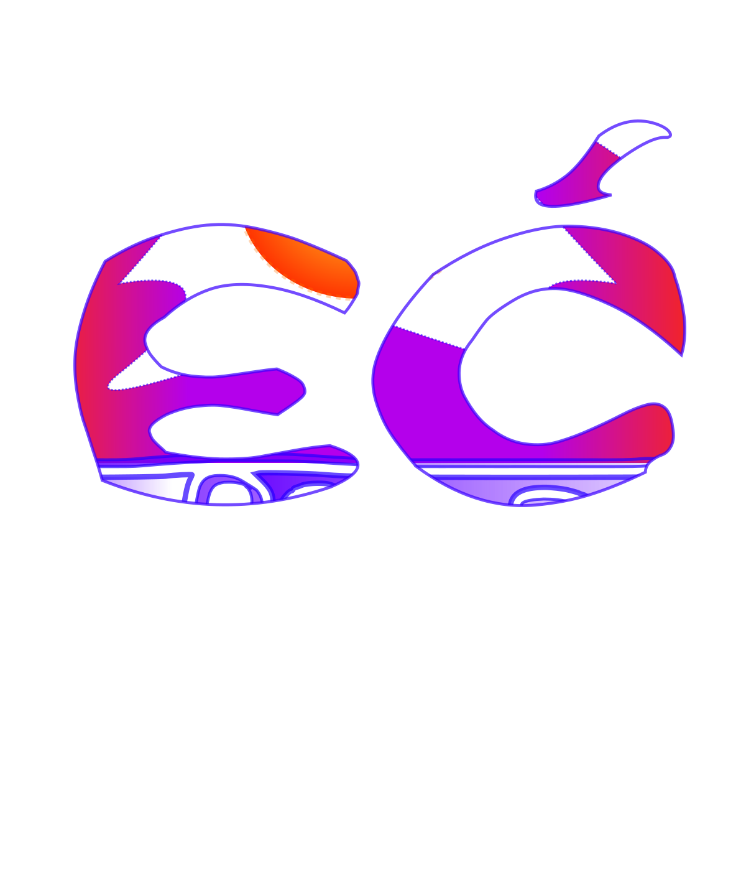
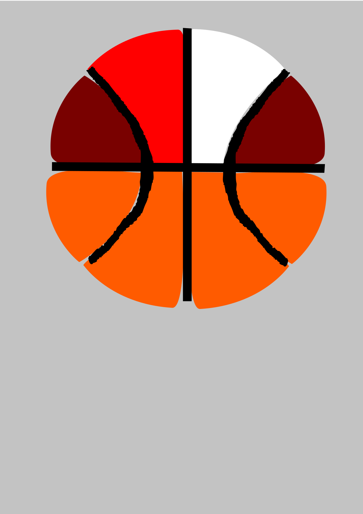
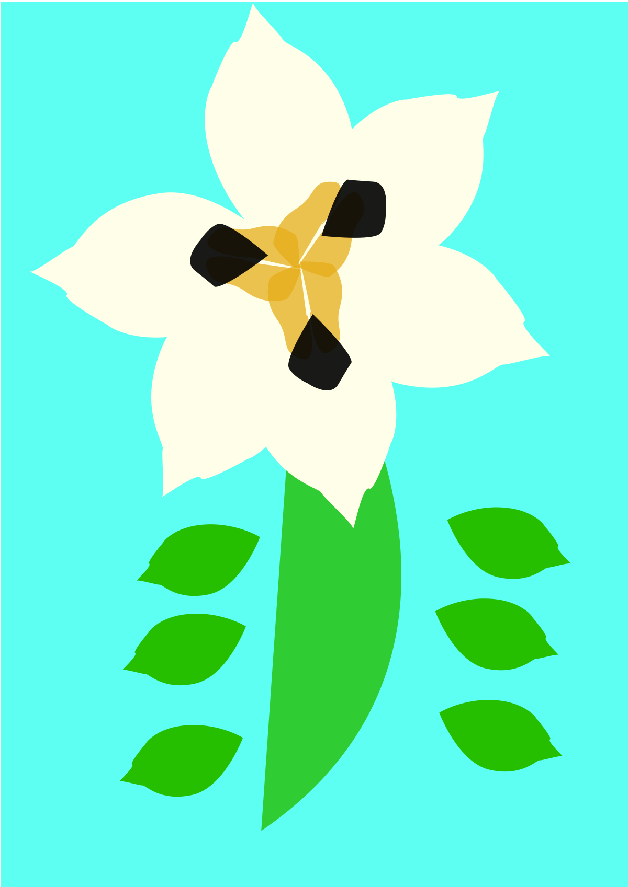
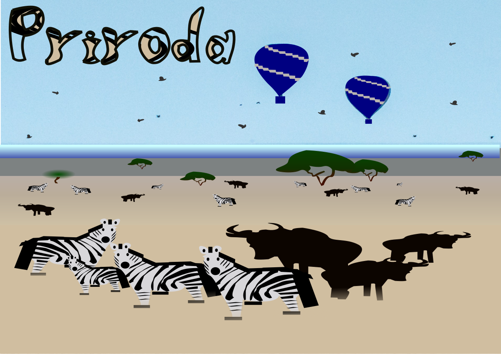

Radovi s vježbi
Na ovoj stranici nalaze se slike vježbi i projektnih zadataka koje sam radio tijekom semestra. Radovi su prikazani u odvojenim cjelinama s kratkim opisom.
Vježba 2.5

Spoj vlastitog fonta i photoshopa.
Vježba 3 - lopta

Volim košarku.
Vježba 3

Cvijet.
Vježba 4

Koktel.
Vježba 7

Fanatik sam auta.
Projektni zadatak 1

Prvi projektni zadatak iz kolegija.
Projektni zadatak 2

Drugi projektni zadatak koji se koristi i kao pozadinska slika stranice.